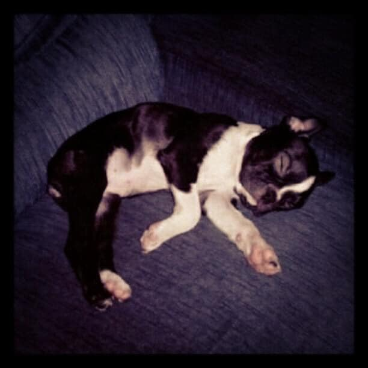

On the day her Boston Terrier named Boosie was going to be put down, Julianna Lopez made a special order at a Topeka Longhorn Steakhouse. She included a note that read, “This is my dog’s last meal. Please make it with love.”
Restaurant staff got emotional reading the message, so they went above and beyond. Not only did they include the tasty meal Lopez had asked for, but they added a special surprise too. Thanks to the efforts of these kind steakhouse workers, Boosie had the most beautiful final day possible. Lopez can’t thank them enough!
Boosie came into Lopez’s life during high school. Lopez was a sophomore who had just transferred to a new school. Boosie helped her feel comfortable in a new environment and overcome her depression.
Since Boosie made such an impact on Lopez, she was a very spoiled pup. She’s Lopez’s “first baby,” who regularly slept with her head on a pillow. Lopez currently has four other dogs, including another Boston Terrier that’s Boosie’s mother.
But at 13 years old, Boosie’s health deteriorated. She grew very ill, so Lopez had to make the tough decision to put her down. Yet, she wanted the pup to have the perfect final meal before saying goodbye. She ordered a 9-ounce filet and a sweet potato from Longhorn Steakhouse. But the restaurant employees went above and beyond.
This was the most anyone has seen her eat for six months,” Lopez said, “and for that moment made us forget she was sick.
When Longhorn Steakhouse delivered Boosie’s meal, they included a free whipped cream treat. They also added a note on the receipt that said, “Made with lots of love! So sorry for your loss. We put a sweet treat in there for them.”
Lopez’s heart melted after that kind gesture. The kind words and the extra treat gave her and Boosie joy on an otherwise dreary day. Lopez turned to Facebook to let everyone know how amazing the Topeka Longhorn Steakhouse is. One of the employees responded with another heartwarming message.
We have a lot of fur baby lovers at our store (myself included),” wrote Longhorn Steakhouse employee Sarah Bybee. “I really hope your buddy enjoyed the last meal.
After the final meal is when the sadness hit. Lopez brought Boosie to Hoyt’s Kester Animal Clinic to have her put down. She said everyone there was very kind and compassionate. Thanks to the special final meal, Lopez knew that Boosie’s final day had been perfect.
I held her, thanked her for loving me when I needed her most, kissed the top of her head and she gave me those final kisses,Lopez said.